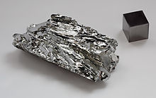
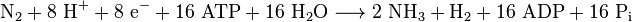

Molybdenum
|  | |||||||||||||||||||||||||||||||||||||||||||||||||||||||||||||||||||||||||||||||||||||||||||||||||||||||||||||||||||||||||||||||||||||||||||||||||||||||||||||||||||||||||||||||||||||||||||||||||||||||||||||||||||||||||||||||||||||
| General properties | |||||||||||||||||||||||||||||||||||||||||||||||||||||||||||||||||||||||||||||||||||||||||||||||||||||||||||||||||||||||||||||||||||||||||||||||||||||||||||||||||||||||||||||||||||||||||||||||||||||||||||||||||||||||||||||||||||||
|---|---|---|---|---|---|---|---|---|---|---|---|---|---|---|---|---|---|---|---|---|---|---|---|---|---|---|---|---|---|---|---|---|---|---|---|---|---|---|---|---|---|---|---|---|---|---|---|---|---|---|---|---|---|---|---|---|---|---|---|---|---|---|---|---|---|---|---|---|---|---|---|---|---|---|---|---|---|---|---|---|---|---|---|---|---|---|---|---|---|---|---|---|---|---|---|---|---|---|---|---|---|---|---|---|---|---|---|---|---|---|---|---|---|---|---|---|---|---|---|---|---|---|---|---|---|---|---|---|---|---|---|---|---|---|---|---|---|---|---|---|---|---|---|---|---|---|---|---|---|---|---|---|---|---|---|---|---|---|---|---|---|---|---|---|---|---|---|---|---|---|---|---|---|---|---|---|---|---|---|---|---|---|---|---|---|---|---|---|---|---|---|---|---|---|---|---|---|---|---|---|---|---|---|---|---|---|---|---|---|---|---|---|---|---|---|---|---|---|---|---|---|---|---|---|---|---|---|---|---|
| Name, symbol | molybdenum, Mo | ||||||||||||||||||||||||||||||||||||||||||||||||||||||||||||||||||||||||||||||||||||||||||||||||||||||||||||||||||||||||||||||||||||||||||||||||||||||||||||||||||||||||||||||||||||||||||||||||||||||||||||||||||||||||||||||||||||
| Pronunciation | /ˌmɒlɪbˈdiːnəm/ or /məˈlɪbdɨnəm/ MOL-ib-DEE-nəm or mə-LIB-di-nəm |
||||||||||||||||||||||||||||||||||||||||||||||||||||||||||||||||||||||||||||||||||||||||||||||||||||||||||||||||||||||||||||||||||||||||||||||||||||||||||||||||||||||||||||||||||||||||||||||||||||||||||||||||||||||||||||||||||||
| Appearance | gray metallic | ||||||||||||||||||||||||||||||||||||||||||||||||||||||||||||||||||||||||||||||||||||||||||||||||||||||||||||||||||||||||||||||||||||||||||||||||||||||||||||||||||||||||||||||||||||||||||||||||||||||||||||||||||||||||||||||||||||
| Molybdenum in the periodic table | |||||||||||||||||||||||||||||||||||||||||||||||||||||||||||||||||||||||||||||||||||||||||||||||||||||||||||||||||||||||||||||||||||||||||||||||||||||||||||||||||||||||||||||||||||||||||||||||||||||||||||||||||||||||||||||||||||||
|
|||||||||||||||||||||||||||||||||||||||||||||||||||||||||||||||||||||||||||||||||||||||||||||||||||||||||||||||||||||||||||||||||||||||||||||||||||||||||||||||||||||||||||||||||||||||||||||||||||||||||||||||||||||||||||||||||||||
| Atomic number | 42 | ||||||||||||||||||||||||||||||||||||||||||||||||||||||||||||||||||||||||||||||||||||||||||||||||||||||||||||||||||||||||||||||||||||||||||||||||||||||||||||||||||||||||||||||||||||||||||||||||||||||||||||||||||||||||||||||||||||
| Standard atomic weight (±) | 95.95(1)[1] | ||||||||||||||||||||||||||||||||||||||||||||||||||||||||||||||||||||||||||||||||||||||||||||||||||||||||||||||||||||||||||||||||||||||||||||||||||||||||||||||||||||||||||||||||||||||||||||||||||||||||||||||||||||||||||||||||||||
| Element category | transition metal | ||||||||||||||||||||||||||||||||||||||||||||||||||||||||||||||||||||||||||||||||||||||||||||||||||||||||||||||||||||||||||||||||||||||||||||||||||||||||||||||||||||||||||||||||||||||||||||||||||||||||||||||||||||||||||||||||||||
| Group, block | group 6, d-block | ||||||||||||||||||||||||||||||||||||||||||||||||||||||||||||||||||||||||||||||||||||||||||||||||||||||||||||||||||||||||||||||||||||||||||||||||||||||||||||||||||||||||||||||||||||||||||||||||||||||||||||||||||||||||||||||||||||
| Period | period 5 | ||||||||||||||||||||||||||||||||||||||||||||||||||||||||||||||||||||||||||||||||||||||||||||||||||||||||||||||||||||||||||||||||||||||||||||||||||||||||||||||||||||||||||||||||||||||||||||||||||||||||||||||||||||||||||||||||||||
| Electron configuration | [Kr] 4d5 5s1 | ||||||||||||||||||||||||||||||||||||||||||||||||||||||||||||||||||||||||||||||||||||||||||||||||||||||||||||||||||||||||||||||||||||||||||||||||||||||||||||||||||||||||||||||||||||||||||||||||||||||||||||||||||||||||||||||||||||
| per shell | 2, 8, 18, 13, 1 | ||||||||||||||||||||||||||||||||||||||||||||||||||||||||||||||||||||||||||||||||||||||||||||||||||||||||||||||||||||||||||||||||||||||||||||||||||||||||||||||||||||||||||||||||||||||||||||||||||||||||||||||||||||||||||||||||||||
| Physical properties | |||||||||||||||||||||||||||||||||||||||||||||||||||||||||||||||||||||||||||||||||||||||||||||||||||||||||||||||||||||||||||||||||||||||||||||||||||||||||||||||||||||||||||||||||||||||||||||||||||||||||||||||||||||||||||||||||||||
| Phase | solid | ||||||||||||||||||||||||||||||||||||||||||||||||||||||||||||||||||||||||||||||||||||||||||||||||||||||||||||||||||||||||||||||||||||||||||||||||||||||||||||||||||||||||||||||||||||||||||||||||||||||||||||||||||||||||||||||||||||
| Melting point | 2896 K (2623 °C, 4753 °F) | ||||||||||||||||||||||||||||||||||||||||||||||||||||||||||||||||||||||||||||||||||||||||||||||||||||||||||||||||||||||||||||||||||||||||||||||||||||||||||||||||||||||||||||||||||||||||||||||||||||||||||||||||||||||||||||||||||||
| Boiling point | 4912 K (4639 °C, 8382 °F) | ||||||||||||||||||||||||||||||||||||||||||||||||||||||||||||||||||||||||||||||||||||||||||||||||||||||||||||||||||||||||||||||||||||||||||||||||||||||||||||||||||||||||||||||||||||||||||||||||||||||||||||||||||||||||||||||||||||
| Density near r.t. | 10.28 g·cm−3 | ||||||||||||||||||||||||||||||||||||||||||||||||||||||||||||||||||||||||||||||||||||||||||||||||||||||||||||||||||||||||||||||||||||||||||||||||||||||||||||||||||||||||||||||||||||||||||||||||||||||||||||||||||||||||||||||||||||
| when liquid, at m.p. | 9.33 g·cm−3 | ||||||||||||||||||||||||||||||||||||||||||||||||||||||||||||||||||||||||||||||||||||||||||||||||||||||||||||||||||||||||||||||||||||||||||||||||||||||||||||||||||||||||||||||||||||||||||||||||||||||||||||||||||||||||||||||||||||
| Heat of fusion | 37.48 kJ·mol−1 | ||||||||||||||||||||||||||||||||||||||||||||||||||||||||||||||||||||||||||||||||||||||||||||||||||||||||||||||||||||||||||||||||||||||||||||||||||||||||||||||||||||||||||||||||||||||||||||||||||||||||||||||||||||||||||||||||||||
| Heat of vaporization | 598 kJ·mol−1 | ||||||||||||||||||||||||||||||||||||||||||||||||||||||||||||||||||||||||||||||||||||||||||||||||||||||||||||||||||||||||||||||||||||||||||||||||||||||||||||||||||||||||||||||||||||||||||||||||||||||||||||||||||||||||||||||||||||
| Molar heat capacity | 24.06 J·mol−1·K−1 | ||||||||||||||||||||||||||||||||||||||||||||||||||||||||||||||||||||||||||||||||||||||||||||||||||||||||||||||||||||||||||||||||||||||||||||||||||||||||||||||||||||||||||||||||||||||||||||||||||||||||||||||||||||||||||||||||||||
vapor pressure
|
|||||||||||||||||||||||||||||||||||||||||||||||||||||||||||||||||||||||||||||||||||||||||||||||||||||||||||||||||||||||||||||||||||||||||||||||||||||||||||||||||||||||||||||||||||||||||||||||||||||||||||||||||||||||||||||||||||||
| Atomic properties | |||||||||||||||||||||||||||||||||||||||||||||||||||||||||||||||||||||||||||||||||||||||||||||||||||||||||||||||||||||||||||||||||||||||||||||||||||||||||||||||||||||||||||||||||||||||||||||||||||||||||||||||||||||||||||||||||||||
| Oxidation states | 6, 5, 4, 3, 2, 1,[2] −1, −2 (a strongly acidic oxide) | ||||||||||||||||||||||||||||||||||||||||||||||||||||||||||||||||||||||||||||||||||||||||||||||||||||||||||||||||||||||||||||||||||||||||||||||||||||||||||||||||||||||||||||||||||||||||||||||||||||||||||||||||||||||||||||||||||||
| Electronegativity | Pauling scale: 2.16 | ||||||||||||||||||||||||||||||||||||||||||||||||||||||||||||||||||||||||||||||||||||||||||||||||||||||||||||||||||||||||||||||||||||||||||||||||||||||||||||||||||||||||||||||||||||||||||||||||||||||||||||||||||||||||||||||||||||
| Ionization energies | 1st: 684.3 kJ·mol−1 2nd: 1560 kJ·mol−1 3rd: 2618 kJ·mol−1 |
||||||||||||||||||||||||||||||||||||||||||||||||||||||||||||||||||||||||||||||||||||||||||||||||||||||||||||||||||||||||||||||||||||||||||||||||||||||||||||||||||||||||||||||||||||||||||||||||||||||||||||||||||||||||||||||||||||
| Atomic radius | empirical: 139 pm | ||||||||||||||||||||||||||||||||||||||||||||||||||||||||||||||||||||||||||||||||||||||||||||||||||||||||||||||||||||||||||||||||||||||||||||||||||||||||||||||||||||||||||||||||||||||||||||||||||||||||||||||||||||||||||||||||||||
| Covalent radius | 154±5 pm | ||||||||||||||||||||||||||||||||||||||||||||||||||||||||||||||||||||||||||||||||||||||||||||||||||||||||||||||||||||||||||||||||||||||||||||||||||||||||||||||||||||||||||||||||||||||||||||||||||||||||||||||||||||||||||||||||||||
| Miscellanea | |||||||||||||||||||||||||||||||||||||||||||||||||||||||||||||||||||||||||||||||||||||||||||||||||||||||||||||||||||||||||||||||||||||||||||||||||||||||||||||||||||||||||||||||||||||||||||||||||||||||||||||||||||||||||||||||||||||
| Crystal structure | body-centered cubic (bcc)
 |
||||||||||||||||||||||||||||||||||||||||||||||||||||||||||||||||||||||||||||||||||||||||||||||||||||||||||||||||||||||||||||||||||||||||||||||||||||||||||||||||||||||||||||||||||||||||||||||||||||||||||||||||||||||||||||||||||||
| Speed of sound thin rod | 5400 m·s−1 (at r.t.) | ||||||||||||||||||||||||||||||||||||||||||||||||||||||||||||||||||||||||||||||||||||||||||||||||||||||||||||||||||||||||||||||||||||||||||||||||||||||||||||||||||||||||||||||||||||||||||||||||||||||||||||||||||||||||||||||||||||
| Thermal expansion | 4.8 µm·m−1·K−1 (at 25 °C) | ||||||||||||||||||||||||||||||||||||||||||||||||||||||||||||||||||||||||||||||||||||||||||||||||||||||||||||||||||||||||||||||||||||||||||||||||||||||||||||||||||||||||||||||||||||||||||||||||||||||||||||||||||||||||||||||||||||
| Thermal conductivity | 138 W·m−1·K−1 | ||||||||||||||||||||||||||||||||||||||||||||||||||||||||||||||||||||||||||||||||||||||||||||||||||||||||||||||||||||||||||||||||||||||||||||||||||||||||||||||||||||||||||||||||||||||||||||||||||||||||||||||||||||||||||||||||||||
| Thermal diffusivity | 54.3 mm2·s−1 (at 300 K)[3] | ||||||||||||||||||||||||||||||||||||||||||||||||||||||||||||||||||||||||||||||||||||||||||||||||||||||||||||||||||||||||||||||||||||||||||||||||||||||||||||||||||||||||||||||||||||||||||||||||||||||||||||||||||||||||||||||||||||
| Electrical resistivity | 53.4 nΩ·m (at 20 °C) | ||||||||||||||||||||||||||||||||||||||||||||||||||||||||||||||||||||||||||||||||||||||||||||||||||||||||||||||||||||||||||||||||||||||||||||||||||||||||||||||||||||||||||||||||||||||||||||||||||||||||||||||||||||||||||||||||||||
| Magnetic ordering | paramagnetic[4] | ||||||||||||||||||||||||||||||||||||||||||||||||||||||||||||||||||||||||||||||||||||||||||||||||||||||||||||||||||||||||||||||||||||||||||||||||||||||||||||||||||||||||||||||||||||||||||||||||||||||||||||||||||||||||||||||||||||
| Young's modulus | 329 GPa | ||||||||||||||||||||||||||||||||||||||||||||||||||||||||||||||||||||||||||||||||||||||||||||||||||||||||||||||||||||||||||||||||||||||||||||||||||||||||||||||||||||||||||||||||||||||||||||||||||||||||||||||||||||||||||||||||||||
| Shear modulus | 126 GPa | ||||||||||||||||||||||||||||||||||||||||||||||||||||||||||||||||||||||||||||||||||||||||||||||||||||||||||||||||||||||||||||||||||||||||||||||||||||||||||||||||||||||||||||||||||||||||||||||||||||||||||||||||||||||||||||||||||||
| Bulk modulus | 230 GPa | ||||||||||||||||||||||||||||||||||||||||||||||||||||||||||||||||||||||||||||||||||||||||||||||||||||||||||||||||||||||||||||||||||||||||||||||||||||||||||||||||||||||||||||||||||||||||||||||||||||||||||||||||||||||||||||||||||||
| Poisson ratio | 0.31 | ||||||||||||||||||||||||||||||||||||||||||||||||||||||||||||||||||||||||||||||||||||||||||||||||||||||||||||||||||||||||||||||||||||||||||||||||||||||||||||||||||||||||||||||||||||||||||||||||||||||||||||||||||||||||||||||||||||
| Mohs hardness | 5.5 | ||||||||||||||||||||||||||||||||||||||||||||||||||||||||||||||||||||||||||||||||||||||||||||||||||||||||||||||||||||||||||||||||||||||||||||||||||||||||||||||||||||||||||||||||||||||||||||||||||||||||||||||||||||||||||||||||||||
| Vickers hardness | 1400–2740 MPa | ||||||||||||||||||||||||||||||||||||||||||||||||||||||||||||||||||||||||||||||||||||||||||||||||||||||||||||||||||||||||||||||||||||||||||||||||||||||||||||||||||||||||||||||||||||||||||||||||||||||||||||||||||||||||||||||||||||
| Brinell hardness | 1370–2500 MPa | ||||||||||||||||||||||||||||||||||||||||||||||||||||||||||||||||||||||||||||||||||||||||||||||||||||||||||||||||||||||||||||||||||||||||||||||||||||||||||||||||||||||||||||||||||||||||||||||||||||||||||||||||||||||||||||||||||||
| CAS Registry Number | 7439-98-7 | ||||||||||||||||||||||||||||||||||||||||||||||||||||||||||||||||||||||||||||||||||||||||||||||||||||||||||||||||||||||||||||||||||||||||||||||||||||||||||||||||||||||||||||||||||||||||||||||||||||||||||||||||||||||||||||||||||||
| History | |||||||||||||||||||||||||||||||||||||||||||||||||||||||||||||||||||||||||||||||||||||||||||||||||||||||||||||||||||||||||||||||||||||||||||||||||||||||||||||||||||||||||||||||||||||||||||||||||||||||||||||||||||||||||||||||||||||
| Discovery | Carl Wilhelm Scheele (1778) | ||||||||||||||||||||||||||||||||||||||||||||||||||||||||||||||||||||||||||||||||||||||||||||||||||||||||||||||||||||||||||||||||||||||||||||||||||||||||||||||||||||||||||||||||||||||||||||||||||||||||||||||||||||||||||||||||||||
| First isolation | Peter Jacob Hjelm (1781) | ||||||||||||||||||||||||||||||||||||||||||||||||||||||||||||||||||||||||||||||||||||||||||||||||||||||||||||||||||||||||||||||||||||||||||||||||||||||||||||||||||||||||||||||||||||||||||||||||||||||||||||||||||||||||||||||||||||
| Most stable isotopes | |||||||||||||||||||||||||||||||||||||||||||||||||||||||||||||||||||||||||||||||||||||||||||||||||||||||||||||||||||||||||||||||||||||||||||||||||||||||||||||||||||||||||||||||||||||||||||||||||||||||||||||||||||||||||||||||||||||
|
|||||||||||||||||||||||||||||||||||||||||||||||||||||||||||||||||||||||||||||||||||||||||||||||||||||||||||||||||||||||||||||||||||||||||||||||||||||||||||||||||||||||||||||||||||||||||||||||||||||||||||||||||||||||||||||||||||||
| Decay modes in parentheses are predicted, but have not yet been observed | |||||||||||||||||||||||||||||||||||||||||||||||||||||||||||||||||||||||||||||||||||||||||||||||||||||||||||||||||||||||||||||||||||||||||||||||||||||||||||||||||||||||||||||||||||||||||||||||||||||||||||||||||||||||||||||||||||||
{kind=link}
Molybdenum is a chemical element with symbol Mo and atomic number 42. The name is from Neo-Latin molybdaenum, from Ancient Greek Μόλυβδος molybdos, meaning lead, since its ores were confused with lead ores.[5] Molybdenum minerals have been known throughout history, but the element was discovered (in the sense of differentiating it as a new entity from the mineral salts of other metals) in 1778 by Carl Wilhelm Scheele. The metal was first isolated in 1781 by Peter Jacob Hjelm.
Molybdenum does not occur naturally as a free metal on Earth, but rather in various oxidation states in minerals. The free element, which is a silvery metal with a gray cast, has the sixth-highest melting point of any element. It readily forms hard, stable carbides in alloys, and for this reason most of world production of the element (about 80%) is in making many types of steel alloys, including high strength alloys and superalloys.
Most molybdenum compounds have low solubility in water, but the molybdate ion MoO2−
4 is soluble and forms when molybdenum-containing minerals are in contact with oxygen and water. Industrially, molybdenum compounds (about 14% of world production of the element) are used in high-pressure and high-temperature applications, as pigments, and as catalysts.
Molybdenum-containing enzymes are by far the most common catalysts used by some bacteria to break the chemical bond in atmospheric molecular nitrogen, allowing biological nitrogen fixation. At least 50 molybdenum-containing enzymes are now known in bacteria and animals, although only bacterial and cyanobacterial enzymes are involved in nitrogen fixation. These nitrogenases contain molybdenum in a different form from the other molybdenum-containing enzymes, which all contain fully oxidized molybdenum incorporated into a molybdenum cofactor. Owing to the diverse functions of the various molybdenum cofactor enzymes, molybdenum is a required element for life in all higher eukaryote organisms, though it is not required by all bacteria.
Contents
[hide]Characteristics[edit]
Physical properties[edit]
In its pure form, molybdenum is a silvery-grey metal with a Mohs hardness of 5.5. It has a melting point of 2,623 °C (4,753 °F); of the naturally occurring elements, only tantalum, osmium, rhenium, tungsten, and carbon have higher melting points.[5] Weak oxidation of molybdenum starts at 300 °C (572 °F). It has one of the lowest coefficients of thermal expansion among commercially used metals.[6] The tensile strength of molybdenum wires increases about 3 times, from about 10 to 30 GPa, when their diameter decreases from ~50–100 nm to 10 nm.[7]
Isotopes[edit]
There are 35 known isotopes of molybdenum, ranging in atomic mass from 83 to 117, as well as four metastable nuclear isomers. Seven isotopes occur naturally, with atomic masses of 92, 94, 95, 96, 97, 98, and 100. Of these naturally occurring isotopes, only molybdenum-100 is unstable.[8]
Molybdenum-98 is the most abundant isotope, comprising 24.14% of all molybdenum. Molybdenum-100 has a half-life of about 1019 y and undergoes double beta decay into ruthenium-100. Molybdenum isotopes with mass numbers from 111 to 117 all have half-lives of approximately 150 ns.[8][9] All unstable isotopes of molybdenum decay into isotopes of niobium, technetium, and ruthenium.[9]
As also noted below, the most common isotopic molybdenum application involves molybdenum-99, which is a fission product. It is a parent radioisotope to the short-lived gamma-emitting daughter radioisotope technetium-99m, a nuclear isomer used in various imaging applications in medicine.[10] In 2008, the Delft University of Technology applied for a patent on the molybdenum-98-based production of molybdenum-99.[11]
Compounds and chemistry[edit]
| Oxidation state |
Example[12] |
|---|---|
| −2 | Na 2[Mo 2(CO) 10] |
| 0 | Mo(CO) 6 |
| +1 | Na[C 6H 6Mo] |
| +2 | MoCl 2 |
| +3 | Na 3[Mo(CN)] 6 |
| +4 | MoS 2 |
| +5 | MoCl 5 |
| +6 | MoF 6 |
{kind=link}
Molybdenum is a transition metal with an electronegativity of 2.16 on the Pauling scale and a standard atomic weight of 95.95 g/mol.[13][14] It does not visibly react with oxygen or water at room temperature, and the bulk oxidation occurs at temperatures above 600 °C, resulting in molybdenum trioxide:
- 2 Mo + 3 O
2 → 2 MoO
3
The trioxide is volatile and sublimates at high temperatures. This prevents formation of a continuous protective oxide layer, which would stop the bulk oxidation of metal.[15] Molybdenum has several oxidation states, the most stable being +4 and +6 (bolded in the table). The chemistry and the compounds show more similarity to those of tungsten than that of chromium. An example is the instability of molybdenum(III) and tungsten(III) compounds as compared with the stability of the chromium(III) compounds. The highest oxidation state is common in the molybdenum(VI) oxide (MoO3), whereas the normal sulfur compound is molybdenum disulfide MoS2.[16]
Molybdenum(VI) oxide is soluble in strong alkaline water, forming molybdates (MoO42−). Molybdates are weaker oxidants than chromates, but they show a similar tendency to form complex oxyanions by condensation at lower pH values, such as [Mo7O24]6− and [Mo8O26]4−. Polymolybdates can incorporate other ions into their structure, forming polyoxometalates.[17] The dark-blue phosphorus-containing heteropolymolybdate P[Mo12O40]3− is used for the spectroscopic detection of phosphorus.[18] The broad range of oxidation states of molybdenum is reflected in various molybdenum chlorides:[16]
- Molybdenum(II) chloride MoCl2 (yellow solid)
- Molybdenum(III) chloride MoCl3 (dark red solid)
- Molybdenum(IV) chloride MoCl4 (black solid)
- Molybdenum(V) chloride MoCl5 (dark green solid)
- Molybdenum(VI) chloride MoCl6 (brown solid)
The structure of the MoCl2 is composed of Mo6Cl84+ clusters with four chloride ions to compensate the charge.[16]
Like chromium and some other transition metals, molybdenum is able to form quadruple bonds, such as in Mo2(CH3COO)4. This compound can be transformed into Mo2Cl84−, which also has a quadruple bond.[16]
The oxidation state 0 is possible with carbon monoxide as ligand, such as in molybdenum hexacarbonyl, Mo(CO)6.[16]
Molybdendum and krypton are the only two elements known to undergo the pp30th ionization energy, with an affinity of 154,500 kilojoules per mole, or 154,500,000 joules per mol of molybdenum.[19]
History[edit]
Molybdenite—the principal ore from which molybdenum is now extracted—was previously known as molybdena. Molybdena was confused with and often utilized as though it were graphite. Like graphite, molybdenite can be used to blacken a surface or as a solid lubricant.[20] Even when molybdena was distinguishable from graphite, it was still confused with the common lead ore PbS (now called galena); the name comes from Ancient Greek Μόλυβδος molybdos, meaning lead.[6] (The Greek word itself has been proposed as a loanword from Anatolian Luvian and Lydian languages).[21]
Although apparent deliberate alloying of molybdenum with steel in one 14th-century Japanese sword (mfd. ca. 1330) has been reported, that art was never employed widely and was later lost.[22][23] In the West in 1754, Bengt Andersson Qvist examined molybdenite and determined that it did not contain lead, and thus was not the same as galena.[24]
By 1778 Swedish chemist Carl Wilhelm Scheele stated firmly that molybdena was (indeed) not galena nor graphite.[25][26] Instead, Scheele went further and correctly proposed that molybdena was an ore of a distinct new element, named molybdenum for the mineral in which it resided, and from which it might be isolated. Peter Jacob Hjelm successfully isolated molybdenum by using carbon and linseed oil in 1781.[6][27]
For about a century after its isolation, molybdenum had no industrial use, owing to its relative scarcity, difficulty extracting the pure metal, and the immaturity of appropriate metallurgical techniques.[28][29][30] Early molybdenum steel alloys showed great promise in their increased hardness, but efforts to manufacture them on a large scale were hampered by inconsistent results and a tendency toward brittleness and recrystallization. In 1906, William D. Coolidge filed a patent for rendering molybdenum ductile, leading to its use as a heating element for high-temperature furnaces and as a support for tungsten-filament light bulbs; oxide formation and degradation require that molybdenum be physically sealed or held in an inert gas.[31] In 1913, Frank E. Elmore developed a flotation process to recover molybdenite from ores; flotation remains the primary isolation process[32]
During the first World War, demand for molybdenum spiked; it was used both in armor plating and as a substitute for tungsten in high speed steels. Some British tanks were protected by 75 mm (3 in) manganese steel plating, but this proved to be ineffective. The manganese steel plates were replaced with 25 mm (1 in) molybdenum steel plating allowing for higher speed, greater maneuverability, and better protection.[6] The Germans also used molybdenum-doped steel for heavy artillery. This was because traditional steel melted at the heat produced by enough gunpowder to launch a one ton shell.[33] After the war, demand plummeted until metallurgical advances allowed extensive development of peacetime applications. In World War II, molybdenum again saw strategic importance as a substitute for tungsten in steel alloys.[34]
Occurrence and production[edit]
{kind=link}
Molybdenum is the 54th most abundant element in the Earth's crust and the 25th most abundant element in its oceans, with an average of 10 parts per billion; it is the 42nd most abundant element in the Universe.[6][35] The Russian Luna 24 mission discovered a molybdenum-bearing grain (1 × 0.6 µm) in a pyroxene fragment taken from Mare Crisium on the Moon.[36] The comparative rarity of molybdenum in the Earth's crust is offset by its concentration in a number of water-insoluble ores, often combined with sulfur, in the same way as copper, with which it is often found. Though molybdenum is found in such minerals as wulfenite (PbMoO4) and powellite (CaMoO4), the main commercial source of molybdenum is molybdenite (MoS2). Molybdenum is mined as a principal ore, and is also recovered as a byproduct of copper and tungsten mining.[5]
Historically, the Knaben mine in southern Norway, opened in 1885, was the first dedicated molybdenum mine. It was closed from 1973 to 2007, but was reopened that year.[37] Large mines in Colorado (such as the Henderson mine and the Climax mine)[38] and in British Columbia yield molybdenite as their primary product, while many porphyry copper deposits such as the Bingham Canyon Mine in Utah and the Chuquicamata mine in northern Chile produce molybdenum as a byproduct of copper mining.
The world's production of molybdenum was 250,000 tonnes in 2011, the largest producers being China (94,000 t), United States (64,000 t), Chile (38,000 t), Peru (18,000 t) and Mexico (12,000 t). The total reserves are estimated at 10 million tonnes, and are mostly concentrated in China (4.3 Mt), US (2.7 Mt) and Chile (1.2 Mt). By continent, 93% of world molybdenum production is about evenly split between North America, South America (mainly in Chile), and China. Europe and the rest of Asia (mostly Armenia, Russia, Iran and Mongolia) produce the remainder.[39]
{kind=link}
In molybdenite processing, the molybdenite is first heated to a temperature of 700 °C (1,292 °F) and the sulfide is oxidized into molybdenum(VI) oxide by air:[16]
- 2 MoS2 + 7 O2 → 2 MoO3 + 4 SO2
The oxidized ore is then either heated to 1,100 °C (2,010 °F) to sublimate the oxide, or leached with ammonia, which reacts with the molybdenum(VI) oxide to form water-soluble molybdates:
- MoO3 + 2 NH4OH → (NH4)2(MoO4) + H2O
Copper, an impurity in molybdenite, is less soluble in ammonia. To completely remove it from the solution, it is precipitated with hydrogen sulfide.[16]
Pure molybdenum is produced by reduction of the oxide with hydrogen, while the molybdenum for steel production is reduced by the aluminothermic reaction with addition of iron to produce ferromolybdenum. A common form of ferromolybdenum contains 60% molybdenum.[16][40]
Molybdenum has a value of approximately $30,000 per tonne as of August 2009. It maintained a price at or near $10,000 per tonne from 1997 through 2003, and reached, due to increased demand, a peak of $103,000 per tonne in June 2005.[41] In 2008 the London Metal Exchange announced that molybdenum would be traded as a commodity on the exchange.[42]
Applications[edit]
Alloys[edit]
About 86% of molybdenum produced is used in metallurgical applications such as alloys, with the rest of molybdenum used as compounds in chemical applications. Estimated fractional global industrial use of molybdenum is structural steel 35%, stainless steel 25%, chemicals 14%, tool & high-speed steels 9%, cast iron 6%, molybdenum elemental metal 6%, and superalloys, 5%.[43]
The ability of molybdenum to withstand extreme temperatures without significantly expanding or softening makes it useful in applications that involve intense heat, including the manufacture of armor, aircraft parts, electrical contacts, industrial motors and filaments.[6][44]
Most high-strength steel alloys (example 41xx steels) contain 0.25% to 8% molybdenum.[5] Despite such small portions, more than 43,000 tonnes of molybdenum are used as an alloying agent each year in stainless steels, tool steels, cast irons and high-temperature superalloys.[35]
Molybdenum is also used in steel alloys for its high corrosion resistance and weldability.[35][39] Molybdenum contributes further corrosion resistance to type-300 stainless steels (specifically type-316) and especially so in the so-called superaustenitic stainless steels (such as alloy AL-6XN, 254SMO or 1925hMo). Molybdenum acts by increasing lattice strain, thus increasing the energy required to dissolve out iron atoms from the surface. Molybdenum can also be used to enhance the corrosion resistance of ferritic (for example grade 444) and martensitic (for example 1.4122 and 1.4418) stainless steels.[citation needed]
Because of its lower density and more stable price, molybdenum is sometimes used instead of tungsten.[35] An example is the 'M' series of high-speed steels such as M2, M4 and M42 as substitution for the 'T' steel series, which contain tungsten. Molybdenum can be implemented both as an alloying agent and as a flame-resistant coating for other metals. Although its melting point is 2,623 °C (4,753 °F), molybdenum rapidly oxidizes at temperatures above 760 °C (1,400 °F) making it better-suited for use in vacuum environments.[44]
TZM (Mo (~99%), Ti (~0.5%), Zr (~0.08%) and some C) is a corrosion-resisting molybdenum superalloy that resists molten fluoride salts at temperatures above 1,300 °C (2,370 °F). It has about twice the strength of pure Mo, and is more ductile and more weldable, yet in tests it resisted corrosion of a standard eutectic salt (FLiBe) and salt vapors used in molten salt reactors for 1100 hours with so little corrosion that it was difficult to measure.[45][46]
Other molybdenum-based alloys that do not contain iron have only limited applications. For example, because of the corrosion resistance against molten zinc, both pure molybdenum and the molybdenum/tungsten alloy (70%/30%) are used for piping, stirrers and pump impellers which come into contact with molten zinc.[47]
Other applications as the pure element[edit]
- Molybdenum powder is used as a fertilizer for some plants, such as cauliflower.[35]
- Elemental molybdenum is also used in NO, NO2, NOx analyzers in power plants for pollution controls. At 350 °C (662 °F) the element acts as a catalyst for NO2/NOx to form only NO molecules for consistent readings by infrared light.[48]
- Molybdenum anodes replace tungsten in certain low voltage X-ray sources, for specialized uses such as mammography.[49]
- The radioactive isotope molybdenum-99 is used to generate technetium-99m, which is used for medical imaging.[50]
Compounds (14% of global use)[edit]
- Molybdenum disulfide (MoS2) is used as a solid lubricant and a high-pressure high-temperature (HPHT) antiwear agent. It forms strong films on metallic surfaces and is a common additive to HPHT greases — in the event of a catastrophic grease failure, a thin layer of molybdenum prevents contact of the lubricated parts.[51] It also has semiconducting properties with distinct advantages over traditional silicon or graphene in electronics applications.[52] MoS2 is also used as a catalyst in hydrocracking of petroleum fractions containing nitrogen, sulfur and oxygen.[53]
- Molybdenum disilicide (MoSi2) is an electrically conducting ceramic with primary use in heating elements operating at temperatures above 1500 °C in air.[54]
- Molybdenum trioxide (MoO3) is used as an adhesive between enamels and metals.[25] Lead molybdate (wulfenite) co-precipitated with lead chromate and lead sulfate is a bright-orange pigment used with ceramics and plastics.[55]
- Ammonium heptamolybdate is used in biological staining procedures.
- Molybdenum coated soda lime glass is used for CIGS solar cell fabrication.
- Phosphomolybdic acid is a stain used in thin layer chromatography.
- Molybdenum-99 is a parent radioisotope to the daughter radioisotope technetium-99m, which is used in many medical procedures. The isotope is handled and stored as the molybdate.[56]
Biological role[edit]
Nitrogenases[edit]
The most important role of the molybdenum in living organisms is as a metal heteroatom at the active site in certain enzymes.[57][58] In nitrogen fixation in certain bacteria, the nitrogenase enzyme, which is involved in the terminal step of reducing molecular nitrogen, usually contains molybdenum in the active site (though replacement of Mo with iron or vanadium is also known). The structure of the catalytic center of the enzyme is similar to that in iron-sulfur proteins: it incorporates a Fe4S3 and multiple MoFe3S3 clusters.[59]
The reaction that nitrogenase enzymes perform is:

With protons and electrons from the electron transport chain, nitrogen is reduced to ammonia and free hydrogen gas. This is an energy-using process, requiring the splitting (hydrolysis) of ATP into ADP plus free phosphate (Pi).
In 2008, evidence was reported that a scarcity of molybdenum in the Earth's early oceans was a limiting factor for nearly two billion years in the further evolution of eukaryotic life (which includes all plants and animals) as eukaryotes cannot fix nitrogen, and must therefore acquire most of their oxidized nitrogen suitable for making organic nitrogen compounds, or the organics themselves (like proteins) from prokaryotic bacteria.[60][61][62] The scarcity of molybdenum resulted from the relative lack of oxygen in the early ocean. Most molybdenum compounds have low solubility in water, but the molybdate ion MoO42− is soluble and forms when molybdenum-containing minerals are in contact with oxygen and water. Once oxygen made by early life appeared in seawater, it helped dissolve molybdenum into soluble molybdate from minerals on the sea bottom, making it available for the first time to nitrogen-fixing bacteria, and allowing them to provide more fixed usable nitrogen compounds for higher forms of life. In 2013, it was suggested possible that boron and molybdenum catalyzed the production of RNA on Mars with life being transported to Earth via a meteorite around 3 billion years ago.[63]
Although oxygen once promoted nitrogen fixation via making molybdenum available in water, it also directly poisons nitrogenase enzymes. Thus, in Earth's ancient history, after oxygen arrived in large quantities in Earth's air and water, organisms that continued to fix nitrogen in aerobic conditions were required to isolate and protect their nitrogen-fixing enzymes in heterocysts, or similar structures protecting them from too much oxygen. This structural isolation of nitrogen fixation reactions from oxygen in aerobic organisms continues to the present.
{kind=link}
Molybdenum cofactor enzymes[edit]
Though molybdenum forms compounds with various organic molecules, including carbohydrates and amino acids, it is transported throughout the human body as MoO42−.[64] At least 50 molybdenum-containing enzymes were known by 2002, mostly in bacteria, and their number is increasing with every year;[65][66] those enzymes include aldehyde oxidase, sulfite oxidase and xanthine oxidase.[6] In some animals, and in humans, the oxidation of xanthine to uric acid, a process of purine catabolism, is catalyzed by xanthine oxidase, a molybdenum-containing enzyme. The activity of xanthine oxidase is directly proportional to the amount of molybdenum in the body. However, an extremely high concentration of molybdenum reverses the trend and can act as an inhibitor in both purine catabolism and other processes. Molybdenum concentrations also affect protein synthesis, metabolism and growth.[64]
In animals and plants a tricyclic compound called molybdopterin (which, despite the name, contains no molybdenum) is reacted with molybdate to form a complete molybdenum-containing cofactor called molybdenum cofactor. Save for the phylogenetically-ancient molybdenum nitrogenases discussed above, which fix nitrogen in some bacteria and cyanobacteria, all molybdenum-using enzymes so far identified in nature use the molybdenum cofactor, where molybdenum is in the oxidation state of VI, similar to molybdate.[67] Molybdenum enzymes in plants and animals catalyze the oxidation and sometimes reduction of certain small molecules, as part of the regulation of nitrogen, sulfur and carbon cycles.[68]
Human dietary intake and deficiency[edit]
Molybdenum is an essential trace element and crucial for the survival of animals.[69] Four mammalian Mo-dependent enzymes are known, all of them harboring a pterin-based molybdenum cofactor (Moco) in their active site: sulfite oxidase, xanthine oxidoreductase, aldehyde oxidase, and mitochondrial amidoxime reductase.[70] People severely deficient in molybdenum have poorly functioning sulfite oxidase and are prone to toxic reactions to sulfites in foods.[71][72] The human body contains about 0.07 mg of molybdenum per kilogram of weight.[73] It occurs in higher concentrations in the liver and kidneys and in lower concentrations in the vertebrae.[35] Molybdenum is also present within human tooth enamel and may help prevent its decay.[74]
The average daily intake of molybdenum varies between 0.12 and 0.24 mg, depending on the molybdenum content of the food.[75] Pork, lamb, and beef liver each have approximately 1.5 parts per million of molybdenum. Other significant dietary sources include green beans, eggs, sunflower seeds, wheat flour, lentils, cucumbers and cereal grain.[6] Acute toxicity has not been seen in humans, and the toxicity depends strongly on the chemical state. Studies on rats show a median lethal dose (LD50) as low as 180 mg/kg for some Mo compounds.[76] Although human toxicity data is unavailable, animal studies have shown that chronic ingestion of more than 10 mg/day of molybdenum can cause diarrhea, growth retardation, infertility, low birth weight and gout; it can also affect the lungs, kidneys and liver.[75][77] Sodium tungstate is a competitive inhibitor of molybdenum. Dietary tungsten reduces the concentration of molybdenum in tissues.[35]
Dietary molybdenum deficiency from low soil concentration of molybdenum has been associated with increased rates of esophageal cancer in a geographical band from northern China to Iran.[78][79] Compared to the United States, which has a greater supply of molybdenum in the soil, people living in these areas have about 16 times greater risk for esophageal squamous cell carcinoma.[80][citation needed]
Molybdenum deficiency has also been reported as a consequence of non-molybdenum supplemented total parenteral nutrition (complete intravenous feeding) for long periods of time. It results in high blood levels of sulfite and urate, in much the same way as molybdenum cofactor deficiency. However, presumably since pure molybdenum deficiency from this mechanism is seen primarily in adults, the neurological consequences have not been as marked as for the congenital cofactor deficiency.[81]
Related diseases[edit]
A congenital molybdenum cofactor deficiency disease, seen in infants, results in interference with the ability of the body to use molybdenum in enzymes. It causes high levels of sulfite and urate, and neurological damage.[82][83] The cause is the inability of the body to synthesize molybdenum cofactor, a heterocyclic molecule that binds molybdenum at the active site in all known human enzymes that use molybdenum.
Copper-molybdenum antagonism[edit]
High levels of molybdenum can interfere with the body's uptake of copper, producing copper deficiency. Molybdenum prevents plasma proteins from binding to copper, and it also increases the amount of copper that is excreted in urine. Ruminants that consume high amounts of molybdenum develop symptoms including diarrhea, stunted growth, anemia and achromotrichia (loss of hair pigment). These symptoms can be alleviated by the administration of more copper into the system, both in dietary form and by injection.[84] The condition, as an effective copper deficiency, can be aggravated by excess sulfur.[35][85]
Copper reduction or deficiency can also be deliberately induced for therapeutic purposes by the compound ammonium tetrathiomolybdate, in which the bright red anion tetrathiomolybdate is the copper-chelating agent. Tetrathiomolybdate was first used therapeutically in the treatment of copper toxicosis in animals. It was then introduced as a treatment in Wilson's disease, a hereditary copper metabolism disorder in humans; it acts both by competing with copper absorption in the bowel and by increasing excretion. It has also been found to have an inhibitory effect on angiogenesis, potentially via the inhibition of copper ion dependent membrane translocation process involving a non-classical secretion pathway.[86] This makes it an interesting investigatory treatment for cancer, age-related macular degeneration, and other diseases featuring excessive blood vessel deposition.[87][88]
Precautions[edit]
Molybdenum dusts and fumes, which can be generated by mining or metalworking, can be toxic, especially if ingested (including dust trapped in the sinuses and later swallowed).[76] Low levels of prolonged exposure can cause irritation to the eyes and skin. Direct inhalation or ingestion of molybdenum and its oxides should be avoided.[89][90] OSHA regulations specify the maximum permissible molybdenum exposure in an 8-hour day as 5 mg/m3. Chronic exposure to 60 to 600 mg/m3 can cause symptoms including fatigue, headaches and joint pains.[91]
References[edit]
- Jump up ^ Standard Atomic Weights 2013. Commission on Isotopic Abundances and Atomic Weights
- Jump up ^ "Molybdenum: molybdenum(I) fluoride compound data". OpenMOPAC.net. Retrieved 2007-12-10.
- Jump up ^ Lindemann, A.; Blumm, J. (2009). Measurement of the Thermophysical Properties of Pure Molybdenum 3. 17th Plansee Seminar.
- Jump up ^ Lide, D. R., ed. (2005). "Magnetic susceptibility of the elements and inorganic compounds". CRC Handbook of Chemistry and Physics (PDF) (86th ed.). Boca Raton (FL): CRC Press. ISBN 0-8493-0486-5.
- ^ Jump up to: a b c d Lide, David R., ed. (1994). "Molybdenum". CRC Handbook of Chemistry and Physics 4. Chemical Rubber Publishing Company. p. 18. ISBN 0-8493-0474-1.
- ^ Jump up to: a b c d e f g h Emsley, John (2001). Nature's Building Blocks. Oxford: Oxford University Press. pp. 262–266. ISBN 0-19-850341-5.
- Jump up ^ Shpak, Anatoly P.; Kotrechko, Sergiy O.; Mazilova, Tatjana I; Mikhailovskij, Igor M (2009). "Inherent tensile strength of molybdenum nanocrystals". Science and Technology of Advanced Materials 10 (4): 045004. Bibcode:2009STAdM..10d5004S. doi:10.1088/1468-6996/10/4/045004.
- ^ Jump up to: a b Audi, Georges; Bersillon, O.; Blachot, J.; Wapstra, A. H. (2003). "The NUBASE Evaluation of Nuclear and Decay Properties". Nuclear Physics A (Atomic Mass Data Center) 729: 3–128. Bibcode:2003NuPhA.729....3A. doi:10.1016/j.nuclphysa.2003.11.001.
- ^ Jump up to: a b Lide, David R., ed. (2006). CRC Handbook of Chemistry and Physics 11. CRC. pp. 87–88. ISBN 0-8493-0487-3.
- Jump up ^ Armstrong, John T. (2003). "Technetium". Chemical & Engineering News. Retrieved 2009-07-07.
- Jump up ^ Wolterbeek, Hubert Theodoor; Bode, Peter "A process for the production of no-carrier added 99Mo". European Patent EP2301041 (A1) ― 2011-03-30. Retrieved on 2012-06-27.
- Jump up ^ Schmidt, Max (1968). "VI. Nebengruppe". Anorganische Chemie II. (in German). Wissenschaftsverlag. pp. 119–127.
- Jump up ^ M. E. Wieser; M. Berglund (2009). "Atomic weights of the elements 2007 (IUPAC Technical Report)" (PDF). Pure and Applied Chemistry 81 (11): 2131–2156. doi:10.1351/PAC-REP-09-08-03.
- Jump up ^ Meija, J. et al. (2013). "Current Table of Standard Atomic Weights in Alphabetical Order: Standard Atomic weights of the elements".
- Jump up ^ Davis, Joseph R. (1997). Heat-resistant materials. Molybdenum (ASM International). p. 365. ISBN 0-87170-596-6.
- ^ Jump up to: a b c d e f g h Holleman, Arnold F.; Wiberg, Egon; Wiberg, Nils (1985). Lehrbuch der Anorganischen Chemie (91–100 ed.). Walter de Gruyter. pp. 1096–1104. ISBN 3-11-007511-3.
- Jump up ^ Pope, Michael T.; Müller, Achim (1997). "Polyoxometalate Chemistry: An Old Field with New Dimensions in Several Disciplines". Angewandte Chemie International Edition 30: 34. doi:10.1002/anie.199100341.
- Jump up ^ Nollet, Leo M. L., ed. (2000). Handbook of water analysis. New York, NY: Marcel Dekker. pp. 280–288. ISBN 978-0-8247-8433-1.
- Jump up ^ http://www.ptable.com/#Property/Ionization
- Jump up ^ Lansdown, A. R. (1999). Molybdenum disulphide lubrication. Tribology and Interface Engineering 35 (Elsevier). ISBN 978-0-444-50032-8.
- Jump up ^ Melchert, Craig. "Greek mólybdos as a Loanword from Lydian" (PDF). University of North Carolina at Chapel Hill. Retrieved 2011-04-23.
- Jump up ^ International Molybdenum Association, "Molybdenum History"
- Jump up ^ Institute, American Iron and Steel (1948). Accidental use of molybdenum in old sword led to new alloy.
- Jump up ^ Van der Krogt, Peter (2006-01-10). "Molybdenum". Elementymology & Elements Multidict. Retrieved 2007-05-20.
- ^ Jump up to: a b Gagnon, Steve. "Molybdenum". Jefferson Science Associates, LLC. Retrieved 2007-05-06.
- Jump up ^ Scheele, C. W. K. (1779). "Versuche mit Wasserbley;Molybdaena". Svenska vetensk. Academ. Handlingar 40: 238.
- Jump up ^ Hjelm, P. J. (1788). "Versuche mit Molybdäna, und Reduction der selben Erde". Svenska vetensk. Academ. Handlingar 49: 268.
- Jump up ^ Hoyt, Samuel Leslie (1921). Metallography 2. McGraw-Hill.
- Jump up ^ Krupp, Alfred; Wildberger, Andreas (1888). The metallic alloys: A practical guide for the manufacture of all kinds of alloys, amalgams, and solders, used by metal-workers ... with an appendix on the coloring of alloys. H.C. Baird & Co. p. 60.
- Jump up ^ Gupta, C.K. (1992). Extractive Metallurgy of Molybdenum. CRC Press. ISBN 978-0-8493-4758-0.
- Jump up ^ Reich, Leonard S (2002-08-22). The Making of American Industrial Research: Science and Business at Ge and Bell, 1876–1926. p. 117. ISBN 9780521522373.
- Jump up ^ Vokes, Frank Marcus (1963). Molybdenum deposits of Canada. p. 3.
- Jump up ^ Sam Kean. The Disappearing Spoon. Page 88–89
- Jump up ^ Millholland, Ray (August 1941). "Battle of the Billions: American industry mobilizes machines, materials, and men for a job as big as digging 40 Panama Canals in one year". Popular Science: 61.
- ^ Jump up to: a b c d e f g h Considine, Glenn D., ed. (2005). "Molybdenum". Van Nostrand's Encyclopedia of Chemistry. New York: Wiley-Interscience. pp. 1038–1040. ISBN 978-0-471-61525-5.
- Jump up ^ Jambor, J.L. et al. (2002). "New mineral names" (PDF). American Mineralogist 87: 181.
- Jump up ^ Langedal, M (1997). "Dispersion of tailings in the Knabena—Kvina drainage basin, Norway, 1: Evaluation of overbank sediments as sampling medium for regional geochemical mapping". Journal of Geochemical Exploration 58 (2–3): 157. doi:10.1016/S0375-6742(96)00069-6.
- Jump up ^ Coffman, Paul B. (1937). "The Rise of a New Metal: The Growth and Success of the Climax Molybdenum Company". The Journal of Business of the University of Chicago 10: 30. doi:10.1086/232443.
- ^ Jump up to: a b "Molybdenum Statistics and Information". U.S. Geological Survey. 2007-05-10. Retrieved 2007-05-10.
- Jump up ^ Gupta, C. K. (1992). Extractive Metallurgy of Molybdenum. CRC Press. pp. 1–2. ISBN 978-0-8493-4758-0.
- Jump up ^ "Dynamic Prices and Charts for Molybdenum". InfoMine Inc. 2007. Retrieved 2007-05-07.
- Jump up ^ "LME to launch minor metals contracts in H2 2009". London Metal Exchange. 2008-09-04. Retrieved 2009-07-28.
- Jump up ^ Pie chart of world Mo uses. London Metal Exchange.
- ^ Jump up to: a b "Molybdenum". AZoM.com Pty. Limited. 2007. Retrieved 2007-05-06.
- Jump up ^ Smallwood, Robert E. (1984). "TZM Moly Alloy". ASTM special technical publication 849: Refractory metals and their industrial applications: a symposium. ASTM International. p. 9. ISBN 9780803102033.
- Jump up ^ "Compatibility of Molybdenum-Base Alloy TZM, with LiF-BeF2-ThF4-UF4". Oak Ridge National Laboratory Report. December 1969. Retrieved 2010-09-02.
- Jump up ^ Cubberly, W. H.; Bakerjian, Ramon (1989). Tool and manufacturing engineers handbook. Society of Manufacturing Engineers. p. 421. ISBN 978-0-87263-351-3.
- Jump up ^ Lal, S.; Patil, R. S. (2001). "Monitoring of atmospheric behaviour of NOx from vehicular traffic". Environmental Monitoring and Assessment 68 (1): 37–50. doi:10.1023/A:1010730821844. PMID 11336410.
- Jump up ^ Lancaster, Jack L. "Ch. 4: Physical determinants of contrast". Physics of Medical X-Ray Imaging (PDF). University of Texas Health Science Center.
- Jump up ^ Theodore Gray. The Elements. pp. 105–107
- Jump up ^ Winer, W. (1967). "Molybdenum disulfide as a lubricant: A review of the fundamental knowledge". Wear 10 (6): 422. doi:10.1016/0043-1648(67)90187-1.
- Jump up ^ "New transistors: An alternative to silicon and better than graphene". Physorg.com. January 30, 2011. Retrieved 2011-01-30.
- Jump up ^ Topsøe, H.; Clausen, B. S.; Massoth, F. E. (1996). Hydrotreating Catalysis, Science and Technology. Berlin: Springer-Verlag.
- Jump up ^ Moulson, A. J.; Herbert, J. M. (2003). Electroceramics: materials, properties, applications. John Wiley and Sons. p. 141. ISBN 0-471-49748-7.
- Jump up ^ International Molybdenum Association. imoa.info.
- Jump up ^ Gottschalk, A (1969). "Technetium-99m in clinical nuclear medicine". Annual review of medicine 20 (1): 131–40. doi:10.1146/annurev.me.20.020169.001023. PMID 4894500.
- Jump up ^ Mendel, Ralf R. (2013). "Chapter 15 Metabolism of Molybdenum". In Banci, Lucia. Metallomics and the Cell. Metal Ions in Life Sciences 12. Springer. doi:10.1007/978-94-007-5561-10_15. ISBN 978-94-007-5560-4. electronic-book ISBN 978-94-007-5561-1 ISSN 1559-0836 electronic-ISSN 1868-0402
- Jump up ^ Chi Chung, Lee; Markus W., Ribbe; Yilin, Hu (2014). "Chapter 7. Cleaving the N,N Triple Bond: The Transformation of Dinitrogen to Ammonia by Nitrogenases". In Peter M.H. Kroneck; Martha E. Sosa Torres. The Metal-Driven Biogeochemistry of Gaseous Compounds in the Environment. Metal Ions in Life Sciences 14. Springer. pp. 147–174. doi:10.1007/978-94-017-9269-1_6.
- Jump up ^ Dos Santos, Patricia C.; Dean, Dennis R. (2008). "A newly discovered role for iron-sulfur clusters". PNAS 105 (33): 11589–11590. Bibcode:2008PNAS..10511589D. doi:10.1073/pnas.0805713105. PMC 2575256. PMID 18697949.
- Jump up ^ Scott, C.; Lyons, T. W.; Bekker, A.; Shen, Y.; Poulton, S. W.; Chu, X.; Anbar, A. D. (2008). "Tracing the stepwise oxygenation of the Proterozoic ocean". Nature 452 (7186): 456–460. Bibcode:2008Natur.452..456S. doi:10.1038/nature06811. PMID 18368114.
- Jump up ^ "International team of scientists discover clue to delay of life on Earth". Eurekalert.org. Retrieved 2008-10-25.
- Jump up ^ "Scientists uncover the source of an almost 2 billion year delay in animal evolution". Eurekalert.org. Retrieved 2008-10-25.
- Jump up ^ "Primordial broth of life was a dry Martian cup-a-soup". New Scientist. 29 August 2013. Retrieved 2013-08-29.
- ^ Jump up to: a b Mitchell, Phillip C. H. (2003). "Overview of Environment Database". International Molybdenum Association. Archived from the original on 2007-10-18. Retrieved 2007-05-05.
- Jump up ^ Enemark, John H.; Cooney, J. Jon A.; Wang, Jun-Jieh; Holm, R. H. (2004). "Synthetic Analogues and Reaction Systems Relevant to the Molybdenum and Tungsten Oxotransferases". Chem. Rev. 104 (2): 1175–1200. doi:10.1021/cr020609d. PMID 14871153.
- Jump up ^ Mendel, Ralf R.; Bittner, Florian (2006). "Cell biology of molybdenum". Biochimica et Biophysica Acta 1763 (7): 621–635. doi:10.1016/j.bbamcr.2006.03.013. PMID 16784786.
- Jump up ^ Fischer, B; Enemark, JH; Basu, P (1998). "A chemical approach to systematically designate the pyranopterin centers of molybdenum and tungsten enzymes and synthetic models". Journal of Inorganic Biochemistry 72 (1–2): 13–21. doi:10.1016/S0162-0134(98)10054-5. PMID 9861725.. Summarized in MetaCyc Compound: molybdopterin. Accessed Nov. 16, 2009.
- Jump up ^ Kisker, C.; Schindelin, H.; Baas, D.; Rétey, J.; Meckenstock, R.U; Kroneck, P.M.H (1999). "A structural comparison of molybdenum cofactor-containing enzymes". FEMS Microbiol. Rev. 22 (5): 503–521. doi:10.1111/j.1574-6976.1998.tb00384.x. PMID 9990727.
- Jump up ^ Schwarz, Guenter; Belaidi, Abdel A. (2013). "Chapter 13. Molybdenum in Human Health and Disease". In Astrid Sigel; Helmut Sigel; Roland K. O. Sigel. Interrelations between Essential Metal Ions and Human Diseases. Metal Ions in Life Sciences 13. Springer. pp. 415–450. doi:10.1007/978-94-007-7500-8_13.
- Jump up ^ Mendel, Ralf R. (2009). "Cell biology of molybdenum". BioFactors 35 (5): 429–34. doi:10.1002/biof.55. PMID 19623604.
- Jump up ^ Blaylock Wellness Report, February 2010, page 3.
- Jump up ^ Cohen, HJ; Drew, RT; Johnson, JL; Rajagopalan, KV (1973). "Molecular Basis of the Biological Function of Molybdenum. The Relationship between Sulfite Oxidase and the Acute Toxicity of Bisulfite and SO2.". Proceedings of the National Academy of Sciences of the United States of America 70 (12 Pt 1–2): 3655–3659. Bibcode:1973PNAS...70.3655C. doi:10.1073/pnas.70.12.3655. PMC 427300. PMID 4519654.
- Jump up ^ Holleman, Arnold F.; Wiberg, Egon (2001). Inorganic chemistry. Academic Press. p. 1384. ISBN 0-12-352651-5.
- Jump up ^ Curzon, M. E. J.; Kubota, J.; Bibby, B. G. (1971). "Environmental Effects of Molybdenum on Caries" (PDF). Journal of Dental Research 50 (1): 74–77. doi:10.1177/00220345710500013401.
- ^ Jump up to: a b Coughlan, M. P. (1983). "The role of molybdenum in human biology". Journal of Inherited Metabolic Disease 6 (S1): 70–77. doi:10.1007/BF01811327. PMID 6312191.
- ^ Jump up to: a b "Risk Assessment Information System: Toxicity Summary for Molybdenum". Oak Ridge National Laboratory. Archived from the original on September 19, 2007. Retrieved 2008-04-23.
- Jump up ^ Barceloux, Donald G.; Barceloux, Donald (1999). "Molybdenum". Clinical Toxicology 37 (2): 231–237. doi:10.1081/CLT-100102422. PMID 10382558.
- Jump up ^ Yang, Chung S. (1980). "Research on Esophageal Cancer in China: a Review" (PDF). Cancer Research 40 (8 Pt 1): 2633–44. PMID 6992989.
- Jump up ^ Nouri, Mohsen; Chalian, Hamid; Bahman, Atiyeh; Mollahajian, Hamid et al. (2008). "Nail Molybdenum and Zinc Contents in Populations with Low and Moderate Incidence of Esophageal Cancer" (PDF). Archives of Iranian Medicine 11: 392.
- Jump up ^ Taylor, Philip R.; Li, Bing; Dawsey, Sanford M.; Li, Jun-Yao; Yang, Chung S.; Guo, Wande; Blot, William J. (1994). "Prevention of Esophageal Cancer: The Nutrition Intervention Trials in Linxian, China" (PDF). Cancer Research 54 (7 Suppl): 2029s–2031s. PMID 8137333.
- Jump up ^ Abumrad, NN (1984). "Molybdenum—is it an essential trace metal?". Bulletin of the New York Academy of Medicine 60 (2): 163–71. PMC 1911702. PMID 6426561.
- Jump up ^ Smolinsky, B; Eichler, S. A.; Buchmeier, S.; Meier, J. C.; Schwarz, G. (2008). "Splice-specific Functions of Gephyrin in Molybdenum Cofactor Biosynthesis". Journal of Biological Chemistry 283 (25): 17370–9. doi:10.1074/jbc.M800985200. PMID 18411266.
- Jump up ^ Reiss, J. (2000). "Genetics of molybdenum cofactor deficiency". Human Genetics 106 (2): 157–63. doi:10.1007/s004390051023. PMID 10746556.
- Jump up ^ Suttle, N. F. (1974). "Recent studies of the copper-molybdenum antagonism". Proceedings of the Nutrition Society (CABI Publishing) 33 (3): 299–305. doi:10.1079/PNS19740053. PMID 4617883.
- Jump up ^ Hauer, Gerald Copper deficiency in cattle. Bison Producers of Alberta. Accessed Dec. 16, 2010.
- Jump up ^ Nickel, W (2003). "The Mystery of nonclassical protein secretion, a current view on cargo proteins and potential export routes". Eur. J. Biochem. 270 (10): 2109–2119. doi:10.1046/j.1432-1033.2003.03577.x. PMID 12752430.
- Jump up ^ Brewer GJ; Hedera, P; Kluin, KJ; Carlson, M; Askari, F; Dick, RB; Sitterly, J; Fink, JK (2003). "Treatment of Wilson disease with ammonium tetrathiomolybdate: III. Initial therapy in a total of 55 neurologically affected patients and follow-up with zinc therapy". Arch Neurol 60 (3): 379–85. doi:10.1001/archneur.60.3.379. PMID 12633149.
- Jump up ^ Brewer, GJ; Dick, RD; Grover, DK; Leclaire, V; Tseng, M; Wicha, M; Pienta, K; Redman, BG; Jahan, T; Sondak, VK; Strawderman, M; LeCarpentier, G; Merajver, SD (2000). "Treatment of metastatic cancer with tetrathiomolybdate, an anticopper, antiangiogenic agent: Phase I study". Clinical cancer research : an official journal of the American Association for Cancer Research 6 (1): 1–10. PMID 10656425.
- Jump up ^ "Material Safety Data Sheet – Molybdenum". The REMBAR Company, Inc. 2000-09-19. Archived from the original on March 23, 2007. Retrieved 2007-05-13.
- Jump up ^ "Material Safety Data Sheet – Molybdenum Powder". CERAC, Inc. 1994-02-23. Archived from the original on 2011-07-08. Retrieved 2007-10-19.
- Jump up ^ "NIOSH Documentation for ILDHs Molybdenum". National Institute for Occupational Safety and Health. 1996-08-16. Retrieved 2007-05-31.
External links[edit]
| Wikimedia Commons has media related to Molybdenum. |
| Look up molybdenum in Wiktionary, the free dictionary. |
- Molybdenum at The Periodic Table of Videos (University of Nottingham)
- Mineral & Exploration – Map of World Molybdenum Producers 2009
- "Mining A Mountain" Popular Mechanics, July 1935 pp. 63–64
- Site for global molybdenum info
- CDC - NIOSH Pocket Guide to Chemical Hazards
| [hide] Periodic table (Large cells) | |||||||||||||||||||||||||||||||||
|---|---|---|---|---|---|---|---|---|---|---|---|---|---|---|---|---|---|---|---|---|---|---|---|---|---|---|---|---|---|---|---|---|---|
| 1 | 2 | 3 | 4 | 5 | 6 | 7 | 8 | 9 | 10 | 11 | 12 | 13 | 14 | 15 | 16 | 17 | 18 | ||||||||||||||||
| 1 | H | He | |||||||||||||||||||||||||||||||
| 2 | Li | Be | B | C | N | O | F | Ne | |||||||||||||||||||||||||
| 3 | Na | Mg | Al | Si | P | S | Cl | Ar | |||||||||||||||||||||||||
| 4 | K | Ca | Sc | Ti | V | Cr | Mn | Fe | Co | Ni | Cu | Zn | Ga | Ge | As | Se | Br | Kr | |||||||||||||||
| 5 | Rb | Sr | Y | Zr | Nb | Mo | Tc | Ru | Rh | Pd | Ag | Cd | In | Sn | Sb | Te | I | Xe | |||||||||||||||
| 6 | Cs | Ba | La | Ce | Pr | Nd | Pm | Sm | Eu | Gd | Tb | Dy | Ho | Er | Tm | Yb | Lu | Hf | Ta | W | Re | Os | Ir | Pt | Au | Hg | Tl | Pb | Bi | Po | At | Rn | |
| 7 | Fr | Ra | Ac | Th | Pa | U | Np | Pu | Am | Cm | Bk | Cf | Es | Fm | Md | No | Lr | Rf | Db | Sg | Bh | Hs | Mt | Ds | Rg | Cn | 113 | Fl | 115 | Lv | 117 | 118 | |
|
|
|||||||||||||||||||||||||||||||||
|
||